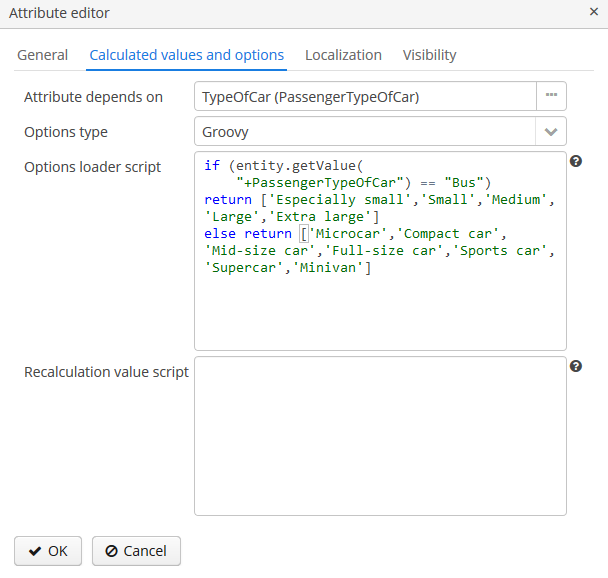
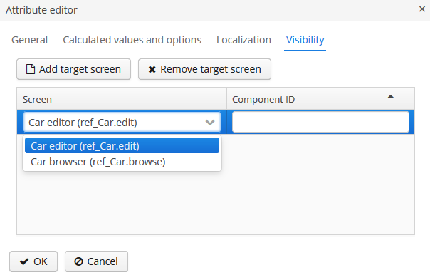

3.9.1.1. 管�动��性
å�¯ä»¥åœ¨ Administration>Dynamic Attributes ç•Œé�¢ç®¡ç�†åŠ¨æ€�å±�性。界é�¢çš„左边有类别列表，å�³è¾¹æ˜¯å±�äº�选ä¸åˆ†ç±»çš„å±�性。
如æ�œè¦�给一个å®�体创建动æ€�å±�性，首先需è¦�创建一个分类。如æ�œè¯¥å®�体类å®�ç�°äº† Categorized æ�¥å�£ï¼Œåˆ†ç±»ç¼–辑器里é�¢çš„ Default å¤�选框表示该分类会自动选为新å®�例的类å�‹ã€‚如æ�œå®�体没有å®�ç�° Categorized æ�¥å�£ï¼Œåˆ™ä¸�会用å¤�é€‰æ¡†çš„å€¼ï¼Œä½ å�¯ä»¥è‡ªå·±ä¸ºè¯¥å®�体创建å�•ä¸€ç±»å�‹ï¼Œæˆ–者创建多个类å�‹ - å®�体的所有å±�性都会按照动æ€�å±�性å�¯è§�性设置展示。
在修改了动��性�置之�，点击分类�览部分的 Apply settings 按钮。改动也�以通过��的 Administration > JMX Console 调用 app-core.cuba:type=CachingFacade JMX bean 的 clearDynamicAttributesCache() 方法应用。
下�是类别编辑器的界�示例：
如æ�œåº”用程åº�支æŒ�多ç§�è¯è¨€ï¼Œåˆ™ä¼šæ˜¾ç¤º Name localization 分组框。它å…�许为æ¯�个å�¯ç”¨çš„è¯è¨€ç�¯å¢ƒè®¾ç½®ç±»åˆ«çš„本地化å��称。
在 Attributes Location æ ‡ç¾é¡µï¼Œå�¯ä»¥åœ¨ DynamicAttributesPanel 内设置æ¯�个动æ€�å±�性的ä½�置。
在 Columns count 下拉列表ä¸æŒ‡å®šåˆ—çš„æ•°é‡�。如è¦�更改å±�性的ä½�置，ä»�å±�性列表拖拽该å±�性放置到目的行列的ä½�置。也å�¯ä»¥æ·»åŠ 空的å�•å…ƒæ ¼æˆ–者更改å±�性的顺åº�。å�šå®Œæ›´æ”¹å��，点击 Save configuration 按钮。
å®�体编辑器的 DynamicAttributesPanel é�¢æ�¿ä¸å±�性的ä½�置：
动æ€�å±�性编辑界é�¢å�¯ä»¥è®¾ç½®å±�性的å��称ã€�系统代ç �ã€�值类å�‹ã€�å±�性的默认值，以å�ŠéªŒè¯�脚本。
对äº�除 Boolean 以外的所有值类å�‹ï¼Œéƒ½æœ‰ä¸€ä¸ª Width å—段å�¯ç”¨äº�设置 Form ä¸çš„å—段宽度（以åƒ�ç´ ä¸ºå�•ä½�或百分比）。如æ�œ Width å—段为空，则å�‡å®šå…¶å€¼ä¸º 100％。
对�除 Boolean 之外的所有值类�，还有一个 Is collection �选框。�许为所选类�创建多值动��性。
对äº�所有的数å—ç±»å�‹ï¼šDoubleã€�Fixed-point numberã€�Integer - å�¯ä»¥ç”¨ä¸‹åˆ—å—段： * Minimum value – 当输入å±�性值时，会检查å±�性值必须大äº�ç‰äº�指定的最å°�值。 * Maximum value – 当输入å±�性值时，会检查å±�性值必须å°�äº�ç‰äº�指定的最大值。
对äº� Fixed-point number 值类å�‹ï¼Œå�¯ä»¥ä½¿ç”¨ Number format pattern å—æ®µè®¾ç½®æ ¼å¼�模æ�¿ã€‚模æ�¿æŒ‰ç…§ DecimalFormat 介ç»�的规则设置。
对äº�所有的值类å�‹ï¼Œå�¯ä»¥åœ¨ Validation script å—段设置脚本用äº�验è¯�用户输入的值。验è¯�逻辑在 Groovy 脚本ä¸ã€‚如æ�œ Groovy 验è¯�失败，脚本应当返å›�一个错误消æ�¯ã€‚å�¦åˆ™ï¼Œè„šæœ¬å�¯ä»¥ä¸�è¿”å›�任何值或者返å›� null。被检查的值在脚本ä¸å�¯ä»¥ä½¿ç”¨ value å�˜é‡�è�·å�–。错误消æ�¯ä½¿ç”¨ä¸€ä¸ª Groovy å—符串；其ä¸å�¯ä»¥ç”¨ $value 关键å—æ�¥ç”Ÿæˆ�æ ¼å¼�化的消æ�¯ã€‚
示例：
if (!value.startsWith("correctValue")) return "the value '\$value' is incorrect"对äº� Enumeration 值类å�‹ï¼Œé€šè¿‡åˆ—表编辑器在 Enumeration å—段ä¸å®šä¹‰å‘½å��值集å�ˆã€‚
�个�举值�以进行本地化显示设置。
对äº� Stringã€�Doubleã€�Entityã€�Fixed-point number å’Œ Integer æ•°æ�®ç±»å�‹ï¼Œå�¯ä»¥ä½¿ç”¨ Lookup field å¤�选框。如æ�œè®¾ç½®äº†è¯¥å¤�选框，用户å�¯ä»¥ä»�下拉列表ä¸é€‰æ‹©å±�性值。å�¯é€‰å€¼åˆ—表å�¯åœ¨ Calculated values and options æ ‡ç¾é¡µé…�置。Entity æ•°æ�®ç±»å�‹ä¼šé…�ç½® Where å’Œ Join è¯å�¥ã€‚
å†�看看 Calculated values and options æ ‡ç¾é¡µã€‚在 Attribute depends on å—段，å�¯ä»¥è®¾ç½®å½“å‰�å±�性ä¾�赖的其它å±�性。当改å�˜å…¶ä¸ä¸€ä¸ªä¾�èµ–å±�性时，则会é‡�新执行计算该å±�性值的脚本或者执行计算å�¯èƒ½å€¼åˆ—表的脚本。
计算å±�性值的 Groovy 脚本通过 Recalculation value script å—段设置。脚本必须返å›�一个新的å�‚数值。脚本会收到下é�¢è¿™äº›å�‚数：
-
entity– 编辑的�体； -
dynamicAttributes– 一个 map æ˜ å°„ï¼Œkey– å±�性代ç �，value– 动æ€�å±�性的值。
使用 dynamicAttributes map �算脚本示例：
if (dynamicAttributes['PassengerNumberofseats'] > 9) return 'Bus' else return 'Passenger car'脚本会在å±�性ä¾�赖的其它å±�性ä¸ä»»ä½•ä¸€ä¸ªå�‘生å�˜åŒ–时进行调用。
如æ�œå®šä¹‰äº†è„šæœ¬ï¼Œå±�性的输入å—段将å�˜æˆ�ä¸�å�¯ç¼–辑状æ€�。
�算�能在这些 UI 组件有效：Form�DynamicAttributesPanel。
Options type å—æ®µå®šä¹‰é€‰é¡¹åŠ è½½å™¨çš„ç±»å�‹ï¼Œå¦‚æ�œ General æ ‡ç¾é¡µçš„查找æ�§ä»¶å¤�选框选ä¸ï¼Œåˆ™å¿…须选择 Options type。如æ�œå¤�选框没有选ä¸ï¼ŒOptions type 会ä¸�å�¯ç”¨ã€‚
å�¯ç”¨çš„é€‰é¡¹åŠ è½½å™¨ç±»å�‹ï¼šGroovyã€�SQLã€�JPQL（仅对äº� Entity æ•°æ�®ç±»å�‹ï¼‰ã€‚
-
Groovy é€‰é¡¹åŠ è½½å™¨ä¼šä½¿ç”¨ Groovy è„šæœ¬åŠ è½½å€¼çš„åˆ—è¡¨ã€‚
entityå�˜é‡�ä¼šä¼ é€’ç»™è„šæœ¬ï¼Œå› æ¤å�¯ä»¥åœ¨è„šæœ¬ä¸ä½¿ç”¨å®�体的å±�性（包括动æ€�å±�性）。Stringç±»å�‹çš„å±�性脚本示例：Figure 45. Groovy é€‰é¡¹åŠ è½½å™¨çš„è„šæœ¬ -
SQL é€‰é¡¹åŠ è½½å™¨ä½¿ç”¨ SQL è„šæœ¬åŠ è½½é€‰é¡¹å€¼ã€‚å�¯ä»¥åœ¨è„šæœ¬ä¸ä½¿ç”¨
${entity}��访问�体。使用${entity.<field>}访问�体�数，field是�体�数的�称。+�缀�以用�访问�体的动��性，比如${entity.+<field>}。脚本示例（这里我们访问�体和�体的动��性Categorytype）：select name from DYNAMICATTRIBUTESLOADER_TAG where CUSTOMER_ID = ${entity} and NAME = ${entity.+Categorytype} -
JPQL é€‰é¡¹åŠ è½½å™¨å�ªèƒ½ä½¿ç”¨åœ¨
Entityç±»å�‹çš„动æ€�å±�性。JPQL æ�¡ä»¶é€šè¿‡ JoinClause å’Œ Where Clause å—段设置。å�¦å¤–，å�¯ä»¥ä½¿ç”¨ Constraint Wizard，能动æ€�创建 JPQL æ�¡ä»¶ã€‚在 JPQL å�‚æ•°ä¸å�¯ä»¥ä½¿ç”¨{entity}å’Œ{entity.<field>}。
所有类�的动��性都支�本地化：
- 动��性的��性
-
动æ€�å±�性还å�¯ä»¥è®¾ç½®å�¯è§�性，定义在哪些界é�¢ä¸æ˜¾ç¤ºã€‚默认情况下，动æ€�å±�性ä¸�显示。
Figure 47. 动æ€�å±�性å�¯è§�性设置除了界é�¢ä¹‹å¤–，还å�¯ä»¥ä¸ºå±�性指定显示组件（比如，å�¯ä»¥åœ¨ç•Œé�¢ä¸ï¼ŒæŒ‡å®šå¤šä¸ªForm组件显示å�Œä¸€å®�体的å—段）。
如æ�œè¯¥å±�性在界é�¢ä¸Šæ ‡è®°ä¸ºå�¯è§�，则在界é�¢ä¸Šç”¨æ�¥å±•ç¤ºç›¸åº”å®�体的所有表å�•å’Œè¡¨æ ¼ä¸ä¼šè‡ªåŠ¨æ˜¾ç¤ºè¯¥å±�性。
对动��性的访问也�用户角色设置的�制。动��性的安全设置�常规�性的安全设置类似。
动æ€�å±�性å�¯ä»¥æ‰‹åŠ¨æ·»åŠ 到界é�¢ï¼Œç»™æ•°æ�®åŠ 载器添åŠ
dynamicAttributes="true"å±�性并使用带+å‰�缀的动æ€�å±�性代ç �绑定组件：<data> <instance id="carDc" class="com.company.app.entity.Car" view="_local"> <loader id="carDl" dynamicAttributes="true"/> </instance> </data> <layout> <form id="form" dataContainer="carDc"> <!--...--> <textField property="+PassengerNumberofseats"/> </form>